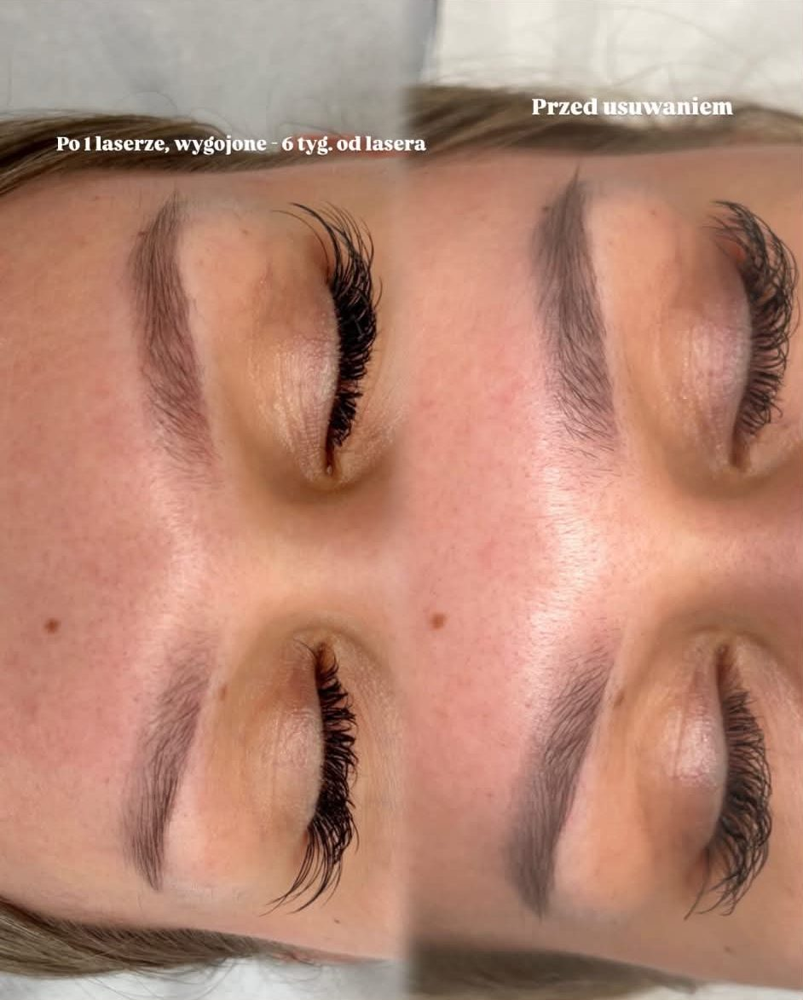

Usuwanie makijażu permanentnego
Jeszcze do niedawna usuwanie makijażu permanentnego kojarzyło się głównie z laserem. Dziś możliwości są znacznie większe, dzięki czemu możemy działać skuteczniej, bezpieczniej i przede wszystkim indywidualnie dobierać metodę do rodzaju pigmentacji, skóry oraz efektu, jaki chcemy osiągnąć.
Nie każda pigmentacja reaguje tak samo na laser. Są sytuacje, w których sam laser nie jest wystarczający lub wymaga połączenia kilku technik. Dotyczy to szczególnie:
- starych pigmentacji sprzed wielu lat,
- mocno nasyconych, „betonowych” brwi,
- ust wykonanych poza naturalnym kształtem,
- pigmentów z silnym spoiwem, przypominających tatuaż,
- brwi po wielu poprawkach,
- pozostałości w kolorach żółtych, czerwonych, zielonych czy pomarańczowych,
- skóry z bliznami lub zmianami po wcześniejszych zabiegach.
Dlatego pracuję kompleksowo, łącząc różne metody usuwania i przebudowy skóry. W zależności od przypadku możliwe jest zastosowanie:
- lasera,
- removera,
- terapii wspierających regenerację i przebudowę skóry.
Każdy przypadek analizuję indywidualnie, ponieważ skuteczne usuwanie pigmentacji wymaga odpowiedniej strategii, cierpliwości i świadomego działania. Celem nie jest jedynie „rozjaśnienie” pigmentacji (brwi/ust), ale bezpieczne doprowadzenie skóry do jak najlepszego stanu lub przygotowanie jej do nowej pigmentacji.
Jeśli masz nieudany, przerysowany, zmieniony kolorystycznie lub bardzo stary makijaż permanentny i nie wiesz, od czego zacząć, zapraszam na konsultację. Dobierzemy najlepsze rozwiązanie dla Twojej skóry i Twoich brwi/ust.
Przeciwwskazania do zabiegu
- Ciąża i okres karmienia piersią
- Infekcje grzybicze, bakteryjne, wirusowe
- Aktywna opryszczka
- Przyjmowanie kuracji sterydowej
- Przyjmowanie antybiotyku
- Okres w którym przyjmujemy retinoidy np. w celu leczenia trądziku tj. Izotek
- Choroby nowotworowe
- Przyjmowanie leków rozrzedzających krew, przeciwzakrzepowych
- Przeziębienie, gorączka
- Kuracja oczyszczająca organizm, detoksy
- Stosowanie odżywek na porost brwi
- Świeża henna, laminacja
- Łuszczyca w obrębie brwi
- Świeżo wykonane zabiegi medycyny estetycznej, kosmetyczne (peeling chemiczny, kwas hialuronowy, botoks itp.)
- Padaczka
- Hemofilia
- Nieustabilizowana choroba, świeżo wykryta bez wdrożonego leczenia, oceny stanu
- Świeże blizny w miejscu pigmentacji
- Nieustabilizowana cukrzyca
- Świeża mocna opalenizna
- Świeżo wykonana operacja chirurgiczna
- Zapalenie wątroby, żółtaczka, HIV, AIDS
Jeśli którykolwiek podpunkt powyżej dotyczy Ciebie, poinformuj mnie o tym przed zapisem.
Zobacz cenyCennik
- Konsultacja przed usuwaniem PMU50 zł
- Kompleksowe usuwanie makijażu permanentnego300 zł